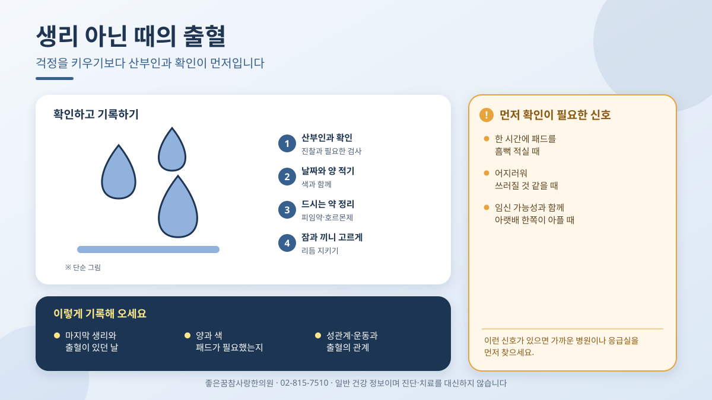

이종호 한의사 감수좋은꿈참사랑한의원 대표원장 (한의사 면허번호 19769)발행 2026-11-26 · 수정 2026-11-26
이 글의 차례
화장실에서 속옷에 묻은 갈색 얼룩을 보고 잠시 멈춰 섭니다. 생리가 끝난 지 열흘밖에 안 됐는데, 이게 뭘까. 대수롭지 않게 넘기려다가도 밤에 누우면 인터넷에서 본 무서운 단어들이 떠오릅니다. 진료실에서 "혹시 큰 병은 아닐까요" 하고 조심스럽게 물으시는 분들의 얼굴에는 대개 며칠 동안의 걱정이 고스란히 담겨 있습니다.
생리가 아닌 때에 피가 비치는 것을 부정출혈이라고 부릅니다. 결론부터 말씀드리면, 부정출혈은 원인이 다양하고 그중 상당수는 호르몬의 일시적인 흔들림처럼 비교적 흔한 이유입니다. 하지만 어떤 이유인지는 보기만 해서는 알 수 없기 때문에, 산부인과에서 한 번 확인하는 것이 출발점입니다.
이 글은 그 확인을 미루지 않도록 돕기 위한 글입니다. 어떤 경우에 부정출혈이 생기는지, 진료 전에 무엇을 적어 가면 좋은지, 그리고 검사를 받은 뒤 한의원에서는 어떤 부분을 함께 살필 수 있는지를 차례로 말씀드리겠습니다.
부정출혈은 어떤 출혈을 말하나요
부정출혈은 정해진 생리 기간이 아닌 때에 질에서 피가 나오는 것을 넓게 부르는 말입니다. 생리와 생리 사이에 속옷에 살짝 비치는 정도부터, 생리처럼 양이 많은 출혈까지 모두 포함됩니다. 성관계 뒤에 피가 비치는 경우와 폐경 뒤에 다시 피가 나오는 경우도 여기에 들어갑니다.
갈색 분비물도 오래된 피가 섞여 나오는 것이라 부정출혈의 한 모습으로 봅니다. 색이 옅다고 괜찮고 붉다고 위험하다는 식으로 나누기는 어렵습니다. 색보다는 언제, 얼마나 자주, 얼마나 오래 나오는지가 더 중요한 정보입니다.
생리 주기 자체가 불규칙해서 이게 생리인지 부정출혈인지 헷갈리는 분도 많습니다. 이런 경우에도 기록이 있으면 구분이 훨씬 쉬워집니다. 생리처럼 며칠간 양이 늘었다 줄어드는 흐름이 있는지, 아니면 며칠 비치다 마는지를 적어 보세요.
왜 생리가 아닌 때에 피가 비칠까요
가장 흔한 이유 가운데 하나는 호르몬의 흔들림입니다. 배란 무렵 에스트로겐이 잠깐 떨어지면서 소량의 피가 비치는 배란기 출혈, 스트레스나 체중 변화, 잠 부족으로 배란이 건너뛰어지며 자궁 내막이 고르지 않게 떨어지는 출혈이 여기에 해당합니다.
피임약이나 호르몬 치료를 시작한 초기, 또는 약을 깜빡 빠뜨렸을 때도 피가 비칠 수 있습니다. 자궁 안에 넣는 피임 장치를 한 뒤 몇 달 동안 출혈이 이어지는 경우도 있습니다. 이런 경우는 처방한 병원에 알리고 상의하시면 됩니다.
자궁 자체의 변화가 원인인 경우도 있습니다. 자궁 내막에 생긴 작은 혹인 용종, 자궁근종이나 선근증, 자궁경부의 염증이나 미란, 질염 같은 감염이 부정출혈을 일으킬 수 있습니다. 대부분은 치료나 관리가 가능한 변화이지만, 산부인과 진찰과 초음파로 확인해야 알 수 있습니다.
나이에 따라 먼저 생각하는 이유도 달라집니다. 사춘기와 갱년기 무렵에는 배란이 들쭉날쭉해 출혈이 잦아지기 쉽습니다. 임신 가능성이 있다면 임신 초기 출혈일 수 있어 확인이 먼저입니다. 폐경 뒤의 출혈은 양이 적더라도 꼭 검사를 받으셔야 하는 경우입니다.
드물게는 갑상선 기능 이상이나 피가 잘 멎지 않는 체질, 피를 묽게 하는 약이 출혈을 늘리기도 합니다. 그래서 산부인과 검사에서 자궁에 특별한 이상이 없다고 들었는데도 출혈이 이어진다면, 내과 쪽 확인을 함께 권하기도 합니다.
산부인과 검사를 미루지 말아야 하는 이유
부정출혈 대부분은 큰 문제가 아니지만, 자궁경부나 자궁 내막의 변화처럼 일찍 발견할수록 다루기 쉬운 원인이 숨어 있을 수도 있습니다. 그래서 '괜찮겠지' 하고 몇 달을 지켜보기보다, 한 번 검사를 받고 마음 편히 지내시는 쪽을 권합니다.
특히 아래와 같은 경우는 미루지 말고 산부인과 진료를 받아 보세요. 성관계 뒤 피가 반복해서 비치는 경우, 폐경 뒤에 다시 출혈이 생긴 경우, 두세 달 이상 부정출혈이 이어지는 경우, 자궁경부암 검진을 받은 지 오래된 경우입니다.
검사라고 하면 부담스럽게 느끼시는 분도 많습니다. 대개는 산부인과 진찰과 초음파, 자궁경부 세포 검사처럼 비교적 간단한 검사로 시작합니다. 결과를 듣고 나면 막연했던 걱정이 구체적인 계획으로 바뀌는 경우가 많습니다.
진료 전에 무엇을 적어 가면 좋을까요
산부인과든 한의원이든, 출혈에 관해 정확히 말씀해 주실수록 진료가 수월해집니다. 기억에만 의존하면 날짜가 섞이기 쉬우니 출혈이 있을 때마다 짧게 적어 두세요.
- 마지막 생리 시작일과 평소 생리 주기
- 출혈이 시작된 날과 끝난 날
- 양: 속옷에 비치는 정도인지, 패드가 필요한 정도인지
- 색: 선홍색인지, 검붉은지, 갈색인지
- 성관계 뒤, 운동 뒤처럼 특별한 때와 관련이 있는지
- 함께 있었던 아랫배 통증, 분비물 변화, 피로나 어지럼
드시는 약과 영양제 목록도 함께 챙겨 주세요. 피임약, 호르몬제, 혈압약, 피를 묽게 하는 약, 은행잎 추출물처럼 출혈과 관련될 수 있는 것들은 특히 중요합니다. 사진으로 찍어 두셔도 됩니다.
검사에서 괜찮다고 들었는데도 계속될 때
산부인과 검사에서 특별한 이상이 없다는 말을 듣고도 출혈이 들쭉날쭉 이어지는 분이 있습니다. 이런 경우 의사 선생님이 호르몬의 흔들림으로 설명하시는 경우가 많고, 상황에 따라 호르몬 약을 권하시거나 지켜보자고 하시기도 합니다.
이 시기에 저는 생활의 흐름을 함께 들여다봅니다. 잠이 몇 시에 들고 몇 번 깨는지, 식사를 거르거나 급하게 체중을 줄이지 않았는지, 몇 달째 큰 스트레스가 이어지고 있지는 않은지요. 배란과 생리는 생활의 리듬에 꽤 민감하게 반응하기 때문입니다.
출혈이 잦으면 피로와 어지럼이 함께 오기도 합니다. 얼굴이 창백하고 계단을 오를 때 숨이 차며 쉽게 지친다면 빈혈이 있는지 혈액 검사로 확인해 보시길 권합니다. 철분이 부족하다고 나오면 처방에 따라 보충하면서 식사도 함께 챙기면 됩니다.
한의학에서는 어떻게 설명하나요
한의학에서는 생리 아닌 때의 출혈을 기운이 약해 피를 붙잡아 두지 못하는 흐름, 몸에 열이 많아 피가 밖으로 밀려나는 흐름, 순환이 막혀 고였던 피가 비치는 흐름 등으로 나누어 설명해 왔습니다.
이것은 진찰할 때 몸의 경향을 읽는 전통적인 설명 방식이지, 산부인과 진단을 대신하는 것은 아닙니다. 같은 부정출혈이라도 피곤하면 더 비치는 분, 열감과 예민함이 함께 있는 분, 아랫배가 묵직하고 덩어리가 섞이는 분처럼 몸의 모습이 다르기 때문에, 그 차이를 살펴 생활과 진료 방향을 정하는 데 씁니다.
성관계 뒤에 비치는 피는 따로 봅니다
부정출혈 가운데 성관계 뒤에 피가 비치는 경우는 조금 따로 생각합니다. 질이 건조하거나 자궁경부 겉면이 약해져 있으면 작은 자극에도 피가 날 수 있고, 질염이나 자궁경부의 염증, 용종이 원인이 되기도 합니다.
한 번 그랬다고 크게 걱정하실 필요는 없지만, 반복된다면 자궁경부를 직접 보고 세포 검사를 받아 보시는 것이 좋습니다. 마지막 자궁경부암 검진이 언제였는지 기억나지 않는다면 이번 기회에 함께 받아 두세요.
갱년기 무렵부터는 질이 얇고 건조해지면서 이런 출혈이 생기기 쉽습니다. 이 경우 산부인과에서 질 건조를 다루는 방법을 안내받을 수 있고, 생활에서는 물을 충분히 드시고 자극이 적은 속옷을 고르는 것부터 챙겨 볼 수 있습니다.
걱정이 길어질 때 마음도 함께 돌봅니다
출혈이 몇 주씩 이어지면 몸보다 마음이 먼저 지칩니다. 화장실에 갈 때마다 확인하게 되고, 검사 결과를 기다리는 며칠이 몹시 길게 느껴집니다. 그 걱정 때문에 잠이 얕아지고, 잠이 얕아지면 호르몬 리듬이 다시 흔들리는 고리가 생기기도 합니다.
결과를 기다리는 동안에는 검색을 멈추고, 들은 설명과 궁금한 점을 종이에 적어 두세요. 다음 진료 때 그 종이를 꺼내 하나씩 물어보시면, 막연한 걱정이 구체적인 답으로 바뀌는 데 도움이 됩니다.
먼저 이렇게 여쭙니다
처음 오시면 대략 이런 순서로 여쭙습니다. 미리 생각해 오시면 이야기가 수월해집니다.
- 산부인과 진료는 받으셨나요? 어떤 설명을 들으셨나요?
- 출혈은 생리 주기 가운데 언제, 며칠 동안 있었나요?
- 양과 색은 어떠했나요?
- 피임약이나 호르몬제, 다른 약을 드시고 계신가요?
- 최근 체중 변화나 큰 스트레스가 있었나요?
- 쉽게 지치거나 어지러운 느낌이 있나요?
검사 결과가 아직 없다면 그 이야기부터 함께 정리합니다. 어떤 검사를 어디서 받으면 좋을지 막막하시다면 그 부분도 편하게 여쭤보세요.
일상에서 먼저 해 볼 수 있는 것
산부인과 검사를 받으신 뒤, 원인이 호르몬의 흔들림 쪽이라는 설명을 들으셨다면 생활에서 리듬을 고르게 하는 것이 도움이 될 수 있습니다.
- 잠드는 시각과 일어나는 시각을 일정하게 맞추기
- 끼니를 거르지 않고, 급하게 체중을 줄이지 않기
- 철분이 들어 있는 살코기, 달걀, 푸른 잎채소 챙기기
- 출혈이 있는 날에는 무리한 운동보다 가벼운 걷기
- 하루 10분이라도 긴장을 내려놓는 시간 만들기
- 출혈이 있을 때마다 날짜와 양을 짧게 기록하기
출혈이 있는 동안에는 탐폰보다 패드를 쓰시면 양과 색을 확인하기 쉽습니다. 질 세정제를 자주 쓰면 오히려 질 안의 환경이 흔들릴 수 있으니, 바깥쪽만 물로 가볍게 씻는 정도로 충분합니다.
한의원에서 함께 살필 수 있는 경우
- 산부인과 검사에서 큰 이상은 없지만 출혈이 들쭉날쭉 이어지는 경우
- 출혈과 함께 피로, 어지럼, 손발 차가움이 신경 쓰이는 경우
- 스트레스나 잠 부족 뒤에 출혈이 잦아지는 경우
- 생리 주기 자체가 불규칙하고 생리통이 함께 있는 경우
- 갱년기 무렵 주기가 흔들리며 열감과 잠 문제가 함께 있는 경우
좋은꿈참사랑한의원에서는 먼저 아래 '먼저 확인이 필요한' 신호가 없는지, 산부인과 검사를 받으셨는지부터 확인합니다. 그다음 맥을 짚고 배와 손발을 살피며, 생리와 출혈의 기록, 잠과 식사, 피로를 함께 여쭙습니다. 진찰한 내용을 바탕으로 침, 한약 상담 가운데 지금 상태에 맞는 방법을 정합니다.
한약을 상의할 때는 드시는 호르몬제와 다른 약을 모두 확인한 뒤 신중하게 정합니다. 산부인과에서 받고 계신 진료와 약은 그대로 이어 가시면서 함께 보시면 됩니다. 임신 가능성이 있다면 먼저 알려 주시고, 산부인과 선생님과 상의가 우선입니다.
이렇게 기록해 오시면 상담이 쉬워집니다
두세 달 정도 아래 내용을 달력에 적어 보세요. 생리 앱에 출혈을 따로 표시하는 기능이 있다면 그것을 쓰셔도 좋습니다.
- 생리 시작일과 끝난 날
- 부정출혈이 있었던 날과 양, 색
- 성관계, 운동, 무거운 것을 든 날과 출혈의 관계
- 잠든 시각과 깬 시각
- 피곤했거나 긴장이 컸던 날
- 드신 약과 빠뜨린 날
기록이 쌓이면 출혈이 배란 무렵에 오는지, 피곤한 주에 몰리는지, 약과 관련이 있는지가 보이기 시작합니다. 이 기록은 산부인과 진료에도 그대로 도움이 됩니다.
기록을 하다 보면 걱정도 조금 정리됩니다. 언제 얼마나 나왔는지를 눈으로 확인할 수 있으니, 막연히 '계속 나온다'는 느낌보다 실제 흐름을 차분하게 바라볼 수 있게 됩니다.
걱정을 확인으로 바꾸는 일
부정출혈을 보면 누구나 마음이 덜컥 내려앉습니다. 그 걱정을 혼자 오래 품고 있는 것보다, 산부인과에서 한 번 확인하고 결과를 들은 뒤 다음 걸음을 정하는 쪽이 몸에도 마음에도 훨씬 가볍습니다.
검사를 마치셨다면 기록과 결과지를 들고 오세요. 출혈과 함께 흔들리는 잠과 피로, 생리 리듬을 차근차근 함께 살펴보겠습니다.
이런 증상은 먼저 확인이 필요합니다
- 한 시간에 패드를 한 장 넘게 흠뻑 적시는 출혈이 이어지거나 어지러워 쓰러질 것 같은 경우
- 임신 가능성이 있는데 피가 비치면서 아랫배 한쪽이 심하게 아픈 경우
이런 신호가 있으면 한의원보다 가까운 병원이나 응급실을 먼저 찾으세요.
함께 읽으면 좋은 글
- 배란통과 배란기 출혈, 생리 사이 아랫배 통증과 피 비침은 어떻게 살피나요?
- 생리가 열흘 가까이 길게 이어지거나 끝 무렵 갈색 피가 오래 비칠 때는 무엇을 살피나요?
- 자궁근종이나 자궁선근증이 있다고 들었을 때 한의원에서는 무엇을 함께 살피나요?
- 자궁경부 이형성이나 HPV 양성 결과를 받고 걱정될 때는 무엇을 살피나요?
- 월경 주기가 불규칙할 때 한의원에서는 무엇을 먼저 확인하나요?

여쭙는 것
- 산부인과 진료는 받으셨나요? 어떤 설명을 들으셨나요?
- 출혈은 생리 주기 가운데 언제, 며칠 동안 있었나요?
- 양과 색은 어떠했나요?
생활에서 해 볼 것
- 잠드는 시각과 일어나는 시각을 일정하게 맞추기
- 끼니를 거르지 않고, 급하게 체중을 줄이지 않기
- 철분이 들어 있는 살코기, 달걀, 푸른 잎채소 챙기기
한의원에서 함께 살필 것
- 산부인과 검사에서 큰 이상은 없지만 출혈이 들쭉날쭉 이어지는 경우
- 출혈과 함께 피로, 어지럼, 손발 차가움이 신경 쓰이는 경우
- 스트레스나 잠 부족 뒤에 출혈이 잦아지는 경우
먼저 확인이 필요한 신호
- 한 시간에 패드를 한 장 넘게 흠뻑 적시는 출혈이 이어지거나 어지러워 쓰러질 것 같…
- 임신 가능성이 있는데 피가 비치면서 아랫배 한쪽이 심하게 아픈 경우
한눈에 보는 표
| 구분 | 핵심 |
|---|---|
| 여쭙는 것 | 산부인과 진료는 받으셨나요? 어떤 설명을 들으셨나요? 출혈은 생리 주기 가운데 언제, 며칠 동안 있었나요? |
| 생활에서 해 볼 것 | 잠드는 시각과 일어나는 시각을 일정하게 맞추기 끼니를 거르지 않고, 급하게 체중을 줄이지 않기 |
| 한의원에서 함께 살필 것 | 산부인과 검사에서 큰 이상은 없지만 출혈이 들쭉날쭉 이어지는 경우 출혈과 함께 피로, 어지럼, 손발 차가움이 신경 쓰이는 경우 |
| 먼저 확인이 필요한 신호 | 한 시간에 패드를 한 장 넘게 흠뻑 적시는 출혈이 이어지거나 어지러워 쓰러질 것 같은 경우 임신 가능성이 있는데 피가 비치면서 아랫배 한쪽이 심하게 아픈 경우 |
자주 묻는 질문
갈색 분비물이 조금 비치는 것도 부정출혈인가요?
오래된 피가 섞여 나오는 경우가 많아 부정출혈의 한 모습으로 봅니다. 한두 번이 아니라 반복된다면 날짜를 적어 두고 산부인과에서 확인해 보세요.
부정출혈이 있으면 한의원부터 가도 되나요?
원인을 확인하는 것이 먼저라 산부인과 진료를 먼저 권합니다. 검사를 받으신 뒤 결과를 가져오시면 생활과 몸의 흐름을 함께 살펴볼 수 있습니다.
피임약을 먹는 중에 피가 비쳐요. 약을 끊어야 하나요?
혼자 끊지 마시고 처방한 병원에 먼저 알려 주세요. 시작 초기나 약을 빠뜨렸을 때 비치는 경우가 있어 복용 방법을 함께 확인하게 됩니다.
출혈 중에도 침 치료를 받을 수 있나요?
산부인과 확인을 받으셨다면 받으실 수 있습니다. 출혈 양과 드시는 약, 특히 피를 묽게 하는 약이 있는지 먼저 알려 주세요.
검사에서 이상이 없다는데 왜 계속 피가 비칠까요?
호르몬의 일시적인 흔들림처럼 생활 리듬과 관련된 경우가 많습니다. 출혈이 이어지면 다시 산부인과와 상의하시고, 잠과 식사, 스트레스를 함께 살펴보세요.
좋은꿈참사랑한의원은 재진 때 지난번 이야기부터 이어서 여쭙니다. 진료시간과 예약은 오시는 길에서 확인하세요.
어디서 상담받을 수 있나요?
좋은꿈참사랑한의원은 서울 동작구 만양로2길 2 신성빌딩 3층·5층(서울 동작구 상도동, 7호선 상도역 3번 출구 근처)에 있습니다. 한의사 3명(이종호 대표원장, 조영기 수석진료원장, 정원영 진료원장)이 진료합니다. 진료시간은 평일 09:30~20:00(점심 13:00~14:00), 토·일·공휴일 09:30~15:00이며, 방문 전 전화로 확인을 권합니다. 예약은 네이버 예약, 카카오톡 상담, 전화 02-815-7510로 받습니다.
이 글은 일반적인 건강 정보이며 개인의 진단이나 치료를 대신하지 않습니다. 증상이 있거나 복용 중인 약이 있다면 진료를 통해 확인하세요. 치료 효과는 개인마다 다를 수 있습니다.
작성 기준: 일반적으로 알려져 있는 건강 정보를 참고해 정리했습니다(대표원장 감수). 증상 기록은 1~2주 동안 하루 1회, 비슷한 시간에 적어 오시면 지난 상태와 비교하기 쉽습니다.